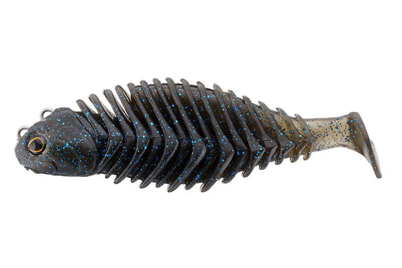
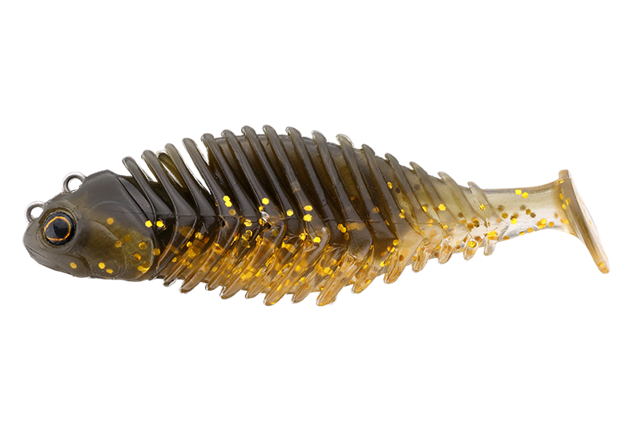
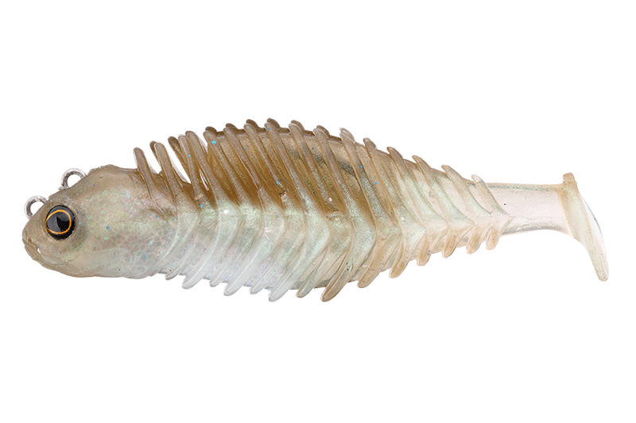
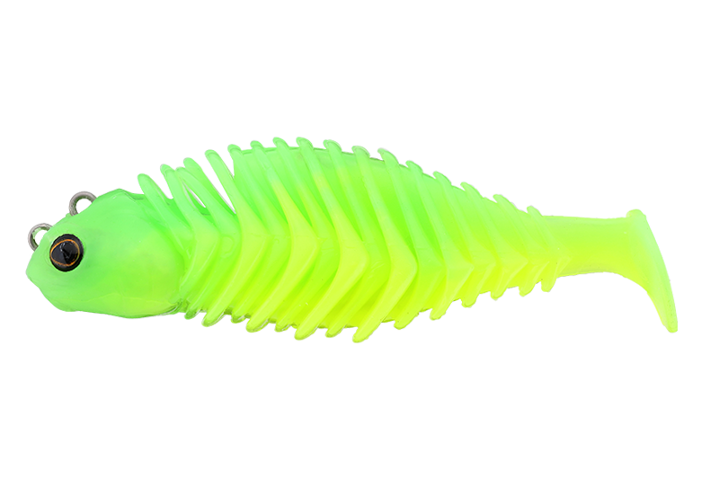

ゴリドラス
（GORIDORAS）
ゴリドラス（GORIDORAS）はJACKALL（ジャッカル）のスイムベイトです。
ジャッカルの「魚を狂わせるボトムゴリゴリアクション」をうたうスイムベイトです。ボトムを這う底生魚「ゴリ」のように底を擦りながら動き、砂煙やボトムコンタクト音でバスの捕食スイッチを強烈に刺激。2026年に登場した、ボトム攻略のための新しいルアーです。

画像出典:ジャッカル公式HP
スペック
- メーカー
- JACKALL（ジャッカル）
- タイプ
- スイムベイト（シンキング）
- 全長
- 2.8インチ
- ウエイト
- 12.8g／16.6g
- フック
- インナーフック（PRO SPEC METAL・PTFE Armor）
- マテリアル
- ソフトエラストマー
- カラー
- 全6色
- ターゲット
- ブラックバス
- 価格
- 1,320円（税込）
- 発売
- 2026年
- その他
- JB/NBC Feco認定商品
▼今すぐチェック
ゴリドラスの特徴
ボトムを擦る音と砂煙で寄せ、自然なボトム姿勢で食わせるスイムベイト
-
底をゴリゴリ擦るボトムアクション
ボトムを這う底生魚「ゴリ」のように、底を擦りながらアクション。砂煙やボトムコンタクト音を出して、フィッシュイーターの捕食スイッチを刺激する。
-
見切られにくいボトムでの安定姿勢
魚が寄ってきた瞬間も、本物のベイトフィッシュのように腹を底に付けた自然な姿勢をキープ。トライアングル構造で、オフセットフックのように姿勢が崩れにくい。
-
インナーフックと2つのアイポジション
フックが露出しないインナーフック構造で、プレッシャーが高い状況でも見切られにくい。アイは「スタンダード」と「すり抜け性能重視」の2つの位置から選べ、根掛かりの多い場所にも対応する。
ゴリドラスの使い方
基本はボトムのズル引き。ソフトエラストマーのボディが、スローなズル引きでもわずかなロッド操作やボトムコンタクトに素早く反応する。底を擦りながら砂煙と音でバスを寄せよう。
ズル引きの合間にステイを入れたり、ボトムを小突くように動かしたりと変化をつけるのも有効。見えているバスには、進行方向の先に投げてボトムで誘う使い方もできます。
ゴリドラスの得意な状況
バスがボトムのベイト（ゴリやハゼなどの底生魚）を意識している状況が最大の出番。
巻き物に反応しないタフな状況や、ボトムに張り付いたバスを狙いたい場面で選びたい1本です。
ワンポイント
12.8gは浅いレンジを快適に攻略でき、おかっぱりからボートまでシャロー攻略の主戦力。16.6gは水深のある場所や、フォールスピードが欲しい時、ボトムからルアーを浮かせたくないサイトフィッシングで活躍します。
根掛かりが多い場所では、アイを「すり抜け性能重視」の位置に付け替えて使いましょう。保管時は、ほかのルアーと触れないようにブリスターに入れておくのがオススメです。
ウエイトの使い分け
| ウエイト | タイプ | 得意な場面 |
|---|---|---|
| 12.8g | シンキング | 浅いレンジ・おかっぱりからボートまでのシャロー攻略 |
| 16.6g | シンキング | 水深のある場所・速いフォール・浮かせたくないサイトフィッシング |
ゴリドラスは2.8インチで12.8gと16.6gの2ウエイト展開。価格はどちらも税込1,320円。
オススメカラー
ゴリドラスは全6色展開。バス釣りでオススメのカラーを紹介します。

ナチュラルゴリゴリをイメージしたナチュラルカラー。

マーモキンクロ監修した加木屋守（マーモ）さんの名前が付いたカラー。

生ワカサギワカサギを食べているバスに合わせるベイトカラー。

FMチャートSP目立つチャート系。濁りや朝夕に。
画像出典:ジャッカル公式HP
ゴリドラスに似ているルアー
-
 クネリー4.4インチ
ボトムアップ
詳細はこちら＞
クネリー4.4インチ
ボトムアップ
詳細はこちら＞
自発的にクネるストレートワーム。フリーリグでボトムを探る時の選択肢に。
-
 レアリス リグルシャッド2.5
DUO
詳細はこちら＞
レアリス リグルシャッド2.5
DUO
詳細はこちら＞
ベイトフィッシュサイズのシャッドテール。中層を巻いて誘いたい時の持ち替え先に。
-
 クラッシュシティ インフィルトレイター
ラパラ
詳細はこちら＞
クラッシュシティ インフィルトレイター
ラパラ
詳細はこちら＞
エラストマー製のスイムベイト。同じスイムベイトで巻きの釣りをしたい時に。